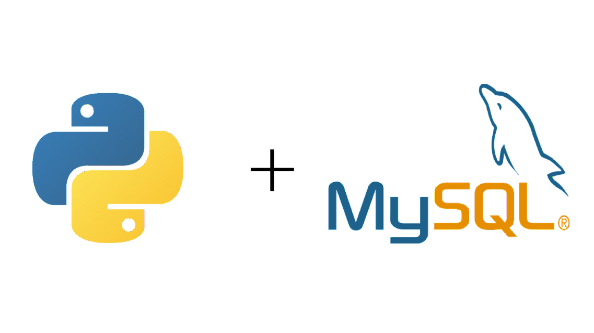

This project showcases my ability to use Python to communicate with a backend MySQL database. This involved
creating a fully operational database and populating multiple tables with relevent data. With the MySQL Connector/Python API I used connection pooling
to hande multiple simulated users accessing the database at the same time, and performed MySQL queries using Python while making use of
MySQL functions and stored procedures. These queries were then used to create an analysis and sales report for the fictional Little Lemon restaurant.

This was my capstone project for the Meta Data Engineering Specialization Certificate. This project showcases my ability to use a variety of data engineering
skills in a real world scenario. This includes modeling a relational database, forward engineering the model into a database schema, and setting up the database
with Views, Stored Procedures, and Prepared Statements in SQL. This project also included creating a dashboard in Tableau to visualize sales reports and setting up a
connection to a Python application to query the database with Python code.

This project showcases my ability to use Python for data cleaning and exploration. Specifically investigating correlations in a large
dataset. Skills used include working with common Python libraries: pandas, numpy, seaborn, and matplotlib to explore and visualize trends in a dataset.

This project showcases my ability to use SQL for analyzing data and preparing it for visualization.
Skills used include joins, CTE's, temp tables, windows functions, aggregate functions, creating views, and converting data types.

This project showcases my ability to clean data in SQL to prepare it for analysis by converting data types, replacing null values,
spliting data over delimiters, using case statements to update data, finding and removing duplicates, and dropping unused columns.

This is a Tableau dashboard I created from the Covid19 data I analyzed in SQL for my other COVID 19 project in this portfolio. This showcases my ability to create
readable, interactive data visualizations for presenting to stakeholders.

This is my final project to complete the Google Data Analytics Certification.
It is a case study using Fitbit tracker data to find trends that can be used to develop new marketing strategies for the company Bellabeat.
I used Excel to clean the data and R to complete the analysis and visualizations.
Lastly I put together this presentation to present my findings and recommendations to the Bellabeat marketing analysts.
This project showcases my ability to create and analyze tables by sorting and filtering the data,
data mining using excel functions, using VLOOKUP to create references between tables and search for information. As well as
finding data insights through Pivot Tables.
This project showcases my ability to clean and prepare date for analysis using SAS. Skills used include data step manipulation,
conditional processing, do loops, creating custom formats, sort procedures, and combining tables.